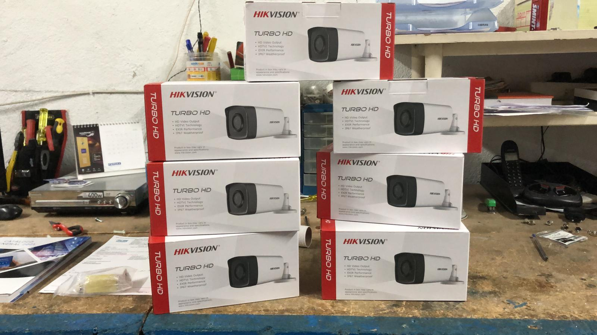
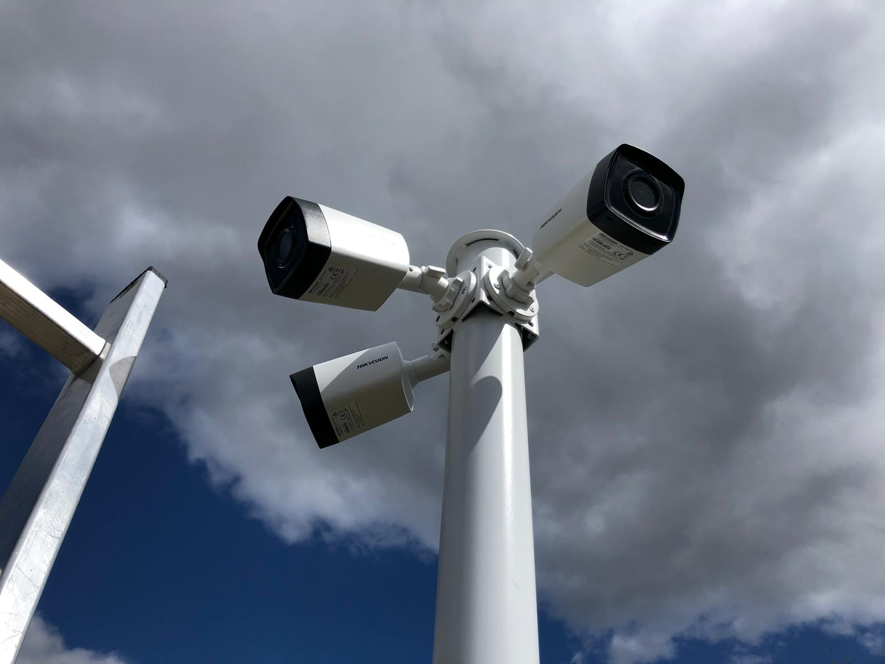
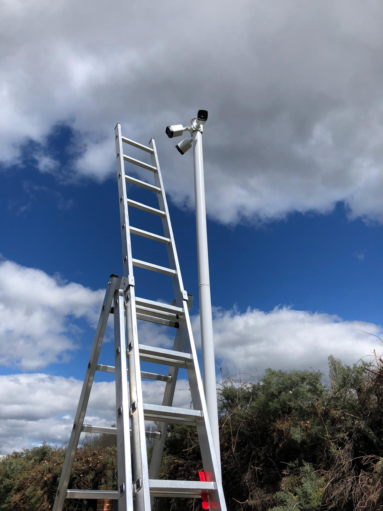

Pedir presupuesto →Una nave industrial en Madrid no tenía ningún sistema de control sobre la entrada y salida de camiones. Sin registro visual, era imposible saber quién accedía, cuándo y con qué mercancía — un riesgo para la seguridad y la operativa del negocio.
TEF instaló un sistema completo de videovigilancia con cámaras estratégicamente posicionadas en los accesos de la nave, cubriendo las zonas de carga y descarga. El sistema permite visualización en tiempo real y grabación continua para consulta posterior.
Control total sobre los accesos de la nave: registro visual de cada camión que entra y sale, con grabación disponible para auditoría. El cliente pasó de cero visibilidad a control completo en un solo día de instalación.

